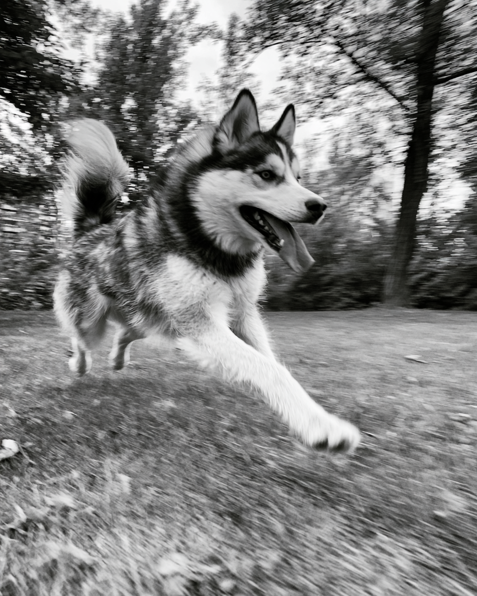

Necessidades
O que muda ao longo da vida.
Filhote
Defesas em formação e um intestino que ainda está aprendendo. Aceitação da tigela desde o primeiro dia.
Adulto
Energia bem aproveitada e fermentação gradual, sem o teto de tolerância das fibras de cadeia curta.
Sênior
A competência imune declina com a idade. É aqui que o betaglucano purificado é a aposta técnica.
Cães respondem a inclusões baixas de extrato de levedura, já na faixa de 0,2–0,5%, e a literatura registra preferência por teores de até cerca de 4%. A curva canina é tolerante: sobe cedo e sustenta uma faixa ampla.